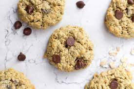

Oatmeal Protein Cookies

Description
Estas masulis estan ricas y hay que tratar de no pasarlas de horno, xq pueden quedar secas muy rapidamente. No obstante lo cualestan buenas y son nutritivas y se hacen mas rapido que rapidin. 5/7
Son ideales para cortar la manija de la tarde, con dos masitas ya podes tener un intake proteico considerable y saciar tu hambre de una manera saludable, rapida y divertida ahre. Estan buenas estan.
Ingredients
- 2 cups of rolled oats
- 2 scoops of vanilla protein
- 4 teaspoons of Maca powder
- 1 teaspoon of Baking soda
- A pinch of salt
- Bit of sugar
- 80 grs of butter
- 1 eg
- 1 teaspoon of vanilla extract
- Chocolate chips
Steps
- Preheat oven to 180 degrees celsius.
- Run one cup of rolled oats on a food processor until the oats look like flour, then mix with all the dry ingredients (except sugar) and leave it there.
- Soften the butter on microwave a few seconds and then cream it on a separate bowl with the sugar until well combined. Add egg and vanilla extract and mix thoroughly.
- Slowly add the contents of the dry bowl to the creamed mixture, and start combinin everything together. If it gets rough near the end you can use your hands instead of a mixer.
- Finally, add the chocolate chips to the mixture with the help of a wooden spoon to mix it. Put the dough on the fridge while setting up a cooking tray sprayed with fritolin and some parchment paper. The smooth side of the paper should go upwards and you can spray it again with fritolin.
- Now that the dough is a bit cooler it will be easier to create the dough balls that will become our cookies. Use a tablespoon to grab the correct measuremont of dough. It should yield aproximately 12 cookies.
- Bake for 8-10 minutes until the bottoms are brown and you're done!